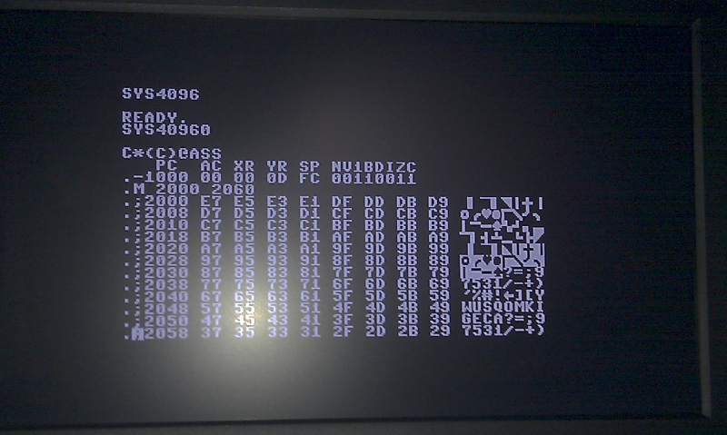

Block Transfer Engine
(C) 2007-2011 André Fachat
Transfering a block of bytes from one memory location to another using the CPU can take a lot of time. A simple transfer loop using absolute addressing uses about 13 cycles per byte. Using zeropage indexed addressing it takes even more. That is the reason why computers like the Amiga or the later Atari ST have block transfer engines, or PCs have DMA engines in the chipset. The 65816 chip even includes special opcodes to do block transfers, with a rate of seven cycles per byte.
So I thought I should add a block tranfer engine to the CS/A system. Back then in 2007 I did a first design - and utterly failed. It implemented two address registers, with a separate adder/incrementer and buffers for each address. So this took a whole lot of board space, and I wasn't able to actually place and route it. You can see the design below as V1 as an example for how not to do it.
In 2010 I had a better look into CPU architectures, and I got the idea that I could build a blitter using something similar to a CPU architecture. Using an architecture with address registers, shared busses, and a single ALU I was able to produce a new design (see V2 below) that does not need as much board space and that I was able to place and route with SMD technology.
In the How it works page I have described how the board works in principle.
- 2011-05-01 Published this page.
- 2010-09-17 Started this page (not published)
Table of content
This section describes how the block transfer engine is programmed.
Register File
The blitter uses a 16-byte address space in the I/O area. The two address options are $EF60 and $E860. Here is the register file:
| Offset | Bits | Mode | Register Name | Part | Description | Comment |
|---|---|---|---|---|---|---|
| 0 | 0-7 | r/w | LDADDR | 0-7 | Load address | Address the data is read from, i.e. start address for the transfer process |
| 1 | 0-7 | r/w | 8-15 | |||
| 2 | 0-3 | r/w | 16-19 | |||
| 4-7 | r/w | Reserved | Must be zero | |||
| 3 | 0-7 | r/o | Reserved | Must be zero | ||
| 4 | 0-7 | r/w | STADDR | 0-7 | Load address | Address the data is written to, i.e. start address for the transfer process |
| 5 | 0-7 | r/w | 8-15 | |||
| 6 | 0-3 | r/w | 16-19 | |||
| 4-7 | r/w | Reserved | Must be zero | |||
| 7 | 0-7 | w/o | Reserved | Must be zero | ||
| 8 | 0-7 | r/w | LDINC | 0-7 | Load address increment | Value that is added to the load address after a transfer |
| 9 | 0-7 | w/o | Reserved | Must be zero | ||
| 10 | 0-7 | r/w | STINC | 0-7 | Store address increment | Value that is added to the store address after a transfer |
| 11 | 0-7 | w/o | Reserved | Must be zero | ||
| 12 | 0-7 | r/w | CNT | 0-7 | Byte transfer counter | Number of bytes to transfer minus 1 |
| 13 | 0-7 | w/o | Reserved | Must be zero | ||
| 14 | 0-7 | - | Reserved | - | ||
| 15 | 0 | w/o | LDCARRY | 0 | Load Carry | Carry to use when adding the load increment to the load address |
| 1 | w/o | STCARRY | 0 | Store Carry | Carry to use when adding the store increment to the store address | |
| 2 | w/o | LDIOSEL | 0 | Use CS/A /IOSEL or /MEMSEL | When set, use IO area, when clear use memory address on the CS/A bus at load | |
| 3 | w/o | STIOSEL | 0 | Use CS/A /IOSEL or /MEMSEL | When set, use IO area, when clear use memory address on the CS/A bus at store | |
| 4 | w/o | LDCOMPL | 0 | Load address complement flag | Value for the load increment bits 8-19. | |
| 5 | w/o | STCOMPL | 0 | Store address complement flag | Value for the store increment bits 8-19. | |
| 6-7 | - | Reserved | - | Must be zero |
Note that registers are not initialized on reset. The reserved registers must be set (for future compatibility), but cannot be read.
Normal Usage
To transfer a block of continous data from one memory area to the next, do:
- Set the LDADDR to the first address of the source memory block
- Set the STADDR to the first address of the target memory block
- Set the LDINC and STINC to 1
- Set the CNT to the number of bytes to transfer minus 1
- Set the control bits in register 15 - writing to this register starts the process. For normal transfer set the register to $0c to use /MEMSEL, and don't set the CARRY and Complement bits
The address values are incremented directly after the transfer. I.e. after the transfer the address points to the address after the memory block.
The increment value is decremented after the transfer. The transfer stops when an underflow occurs in this process. I.e. after the transfer the CNT register holds $FF.
As the maximum number of bytes to transfer is 256 (by writing 255 into CNT), to transfer more data, multiple transfers have to be used. The registers are updated such that just writing to register 15 multiple times transfer multiple contiguous blocks.
Special Features
Here are some special features:
- Reverse Transfer: If you want to transfer data in reverse order, i.e. from a high address to a low address, you can use the Complement bits in the control register 15. For example to use an offset of minus one (-1), you need to set the INC register with $FF, and also set the corresponding Complement bit COMPL in the control register. This leads to an added offset of $FFFFF, which actually is like substracting one. By using a positive offset in one address and a negative offset in the other address, you can reverse the order of the data bytes in a memory block
- 256 byte INC offset: The INC register can only hold values up to 255. To implement a transfer that takes a byte off of each page - i.e. with an offset of 256 byte - the CARRY control register bits can be used. The carry is used in the appropriate addition of the INC value to the address. Thus when the INC register is set to 255, and the carry is set, an offset of 256 is used for the transfer.
- I/O DMA: The blitter can also be used to implement data transfer from an I/O address to memory and vice versa. Using a /IOSEL with an INC value of zero (and carry not set) in the load setup reads each byte from the same I/O address.
Caveats
There are some caveats when using the blitter:
- The block transfer is not interruptible. I.e. you possibly introduce a latency of about 512 cycles (256 bytes max transfer, one load and one store each).
- The blitter stops the bus with the RDY signal. This means that this signal is not available for a device to signal lower speed to the blitter. I.e. memory or I/O devices that use RDY cannot be used with the blitter.
- The blitter uses physical addresses on the CS/A bus. The CPU normally sees address locations translated by the CPU's memory management unit. This translation from virtual to physical addresses must be done explicitely when programming the blitter.
In the How it works page the principles of operation are described. Here I'll describe some of the implementation details (of the V2 board).
Data Bus Separation
In the principle description the CPU data bus is connected to the INBUS drivers, the increment registers, the increment data buffer, and - not shown there - to the input as well as output of the data transfer register (where the transferred data is kept). This would put a lot of load on the actual CPU data bus. Therefore I added IC15, a data bus driver that separates the actual CPU data bus from the board data bus.
Logic Implementation
The system actually only uses a few bits of "state" if you don't count the address and increment registers. It must know if it is active, and when active it needs to know which operation it is doing - fetch or store. This state is defined in the signals /ACTIVE and FETCH/-STORE. In the 2.0 version these bits were determined by some RS-Flipflops, and all other logic was derived from that and implemented in two PAL chips. But my PAL burner is not that reliable and I had a Xilinx 9536 CPLD around, so I decided to move everything into the CPLD - which is shown in the 2.1 version. Unfortunately the CPLD is about a few lines short of being able to include all the logic. So some small parts are still implemented as inverters and AND gates.
Note that the 2.1 board contains some "PIN" pads, to be able to easily use the remaining logic gates even though these chips are SMD...
Layout description
If you look at the layout, it is dominated by a five-by-four array of SOW20 chips with some smaller chips to the right. These implement the INBUS, OUTBUS and Increment busses as follows:
The first row of chips implements the Increment bus, with two '574 as increment value registers for fetch and store. Then there is IC24 ('245) to read out the increment bus, and IC23 ('245) to feed a zero increment into the adder.
To the right of that comes IC32 ('245) and IC25/IC28 (both '193) that implement the transfer counter.
The next three rows of ICs implement the address bits 0-7, 8-15 and 16-19 respectively, including their part of the INBUS and OUTBUS busses. From left to right First comes the address drivers that are used to drive the OUTBUS to the CPU address bus. Then there are the two '574 that hold the fetch and store address values; then there is the data bus driver, connecting the INBUS with the CPU data bus. The right-most 20-pin chip is the ALU output driver, that drives the adder output onto the INBUS. The smaller chips to the right are '293 4-bit adders, implementing the actually "ALU" adder.
Simple test suite
These tests implement some basic test cases:
{kind=link}
If you look close enough you can see that the memory from $f000 is copied to $2000 - but in the reverse order :-)

{kind=link}
Result of blitter4 test - you can see the timer counts 2 cycles from one access to the next :-)
- blitter1.a65: sets up the blitter for a one-byte transfer, and allows to run that in a loop (after a small patch), so that you can easily scope the signals
- blitter2.a65: copies 4k of memory from $f000 to $2000. Has a simple mini-driver with API in it.
- blitter3.a65: copies the 4k from $f000 to $2000, but reversing the order using the 2s-complement add. Uses the same mini-driver
- blitter4.a65: sets up a VIA timer, and copies timer values from the timer to memory at $2000 (512 byte only)
- blitter5.a65: copies 4k from $f000 to $2000, but with intermediate storage in the video memory board at $10000
| Blitter.tar.gz(blitter tests) |
Version: 2.1C
Status: ok
Notes
| Working! |
Files
| csa_blitter-v2.1c.sch | |
| csa_blitter-v2.1c-sch.png | |
| csa_blitter-v2.1c.brd | |
| csa_blitter-v2.1c-brd.png | |
| csa_blitter-v2.1c-layout.png | |
| blitter-v2.1a-patched2.png(My v2.1a board patched up to v2.1c (with other traces on the back side)) | |
| blitter-v2.1b.vhd(CPLD VHDL source) | |
| blitter-v2.1b.ucf(CPLD constraints file (pin mapping)) | |
| blitter-v2.1b.jed(CPLD compiled source) |
{kind=link}
{kind=link}
{kind=link}
{kind=link}
Version: 2.1B
Status: working, but API with bugs
Notes
| Working - except for some sign issues... which are fixed in 2.1C: The selection between the Fetch and Store bits in the control register was the wrong way around, and the LDIOSEL control bit was resulting in the wrong level... |
Files
| csa_blitter-v2.1b.sch | |
| csa_blitter-v2.1b-sch.png | |
| csa_blitter-v2.1b.brd | |
| csa_blitter-v2.1b-brd.png | |
| csa_blitter-v2.1b-layout.png | |
| blitter-v2.1a-patched.png(My v2.1a board patched up to v2.1b (with other traces on the back side)) | |
| blitter-v2.1b.vhd(CPLD VHDL source) | |
| blitter-v2.1b.ucf(CPLD constraints file (pin mapping)) | |
| blitter-v2.1b.jed(CPLD compiled source) |
{kind=link}
{kind=link}
{kind=link}
{kind=link}
Version: 2.1A
Status: prototype
Notes
| I have tested this board and found some bugs - that are fixed with 2.1B above. | |
| This board is a prototype design that I still have to build and test! |
{kind=link}
{kind=link}
{kind=link}
Version: 1.0B
Status: not working
Notes
| This is an example of how not to do it. The schematics sport an own adder resp. incrementer for each address, load and store, and the increment value. The board layout shows why I decided to start from scratch - no way to route this on a two-layer Eurocard PCB. | |
| The board was supposed to have a daughter board with exchangeable logic to implement transparent DMA - hiding the DMA accesses in the bogus cycles between the valid CPU access cycles. That's what the TDMA connector was for. Looking at the discussions about how the CPU handles interrupts (they start after the opcode fetch, so you'd have to monitor either writes or the interrupt line as well) I decided to skip this feature. This also removed the need to read the counter register. |
{kind=link}
{kind=link}
Return to Homepage
Last modified: 2011-05-01